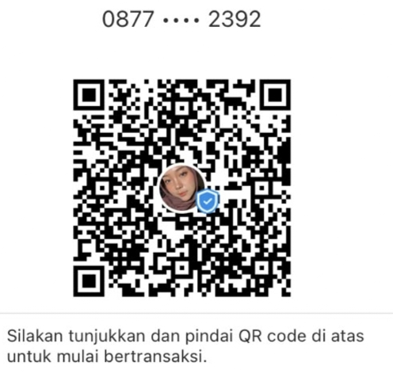

👥Susunan Panitia
Ketua Panitia
Bpk Ujang
Bendahara / PIC Keuangan
Mama Erkan & Kahila
Anggota
Tante Amel
Mama Rifda
Mama Nay
Mama Fayra
Mama Rey Justin
Jeko
Bian
Alvaro
🎉Pembukaan Pagi
- Foto Bersama
- Menyanyikan Lagu Indonesia Raya
- Penyalaan Party Popper
🏁Jadwal Perlombaan
Usia 2–3 Tahun Pagi
| 07.30 – 07.45 | Memindahkan Bendera |
| 07.45 – 08.00 | Memindahkan Bola Tempel ke Ember |
| 08.00 – 08.15 | Makan Biskuit |
Usia 4, 5, 6 Tahun Pagi
| 08.20 – 08.35 | Estafet Kardus |
| 08.35 – 08.50 | Tiup Bola di atas Gelas Isi Air |
| 08.50 – 09.05 | Memindahkan Gelas pakai Sumpit |
| 09.05 – 09.20 | Memindahkan Air pakai Spons |
Usia 7, 8, 9 Tahun Pagi
| 09.25 – 09.40 | Balap Kelereng |
| 09.40 – 09.55 | Makan Kerupuk |
| 09.55 – 10.10 | Pancing Paku |
| 10.10 – 10.25 | Dorong Baskom |
Usia 10, 11, 12 Tahun Pagi
| 10.30 – 10.45 | Memindahkan Pilus pakai Sumpit |
| 10.45 – 11.00 | Menusuk Balon pakai Kawat |
| 11.00 – 11.15 | Memindahkan Air di Kepala |
Remaja Siang
| 13.35 – 13.50 | Memecahkan Balon Isi Air |
| 13.50 – 14.05 | Lomba Menggiring Ikan Kertas ke Nampan |
Ibu-Ibu Siang
| 14.10 – 14.25 | Estafet Gelas pakai Balon |
| 14.25 – 14.40 | Memindahkan Belut |
| 14.40 – 14.55 | Estafet Air pakai Plastik |
Gabungan / Bapak-Bapak Sore
| 15.00 – Selesai | Tarik Tambang |
| Habis Ashar (Cadangan) | Memecahkan Balon di Kaki |
| Habis Ashar (Cadangan) | Pakai Sarung sambil Lempar Balon |
🌙Acara Malam Puncak
🍿
Konsumsi
Snack anak & orang tua, air mineral
🏆
Pembagian Hadiah
Juara 1, 2, dan 3 tiap lomba
🎁
Pembagian Souvenir
1 souvenir per KK untuk semua warga
💝
Cendera Mata
Khusus warga/peserta yang belum dapat hadiah
💰Rencana Anggaran Biaya (RAB)
| Keterangan | Jumlah (Rp) |
|---|---|
| Alat Perlombaan | 122.000 |
| Konsumsi Malam Puncak (termasuk Sound System & Air) | 2.190.000 |
| Budget Hadiah (Anak, Ibu, Bapak) | 945.000 |
| Total Pengeluaran Sementara | 3.257.000 |
| Estimasi Pemasukan (Iuran Warga: Rp 65.000 × 58 KK) | 3.770.000 |
| Sisa Anggaran Sementara | 513.000 |
Catatan Penting: Pembayaran iuran ini tidak membedakan warga tertentu, sehingga kewajiban ini ditanggung bersama sebagai bentuk gotong royong. Jika terdapat pengeluaran di luar budget, akan di-backup dari uang kas perumahan. Sisa anggaran dialokasikan untuk Dana Darurat / Photo Booth / Souvenir.
💳Info Pembayaran

Silakan tunjukkan dan pindai QR code di atas untuk mulai bertransaksi.
Transfer via DANA
0877 3507 2392
a.n. Fatimah Sari Yanti
💡 Bisa transfer langsung ke nomor DANA di atas, atau scan QR code di samping untuk mempercepat proses pembayaran iuran acara 17 Agustus.